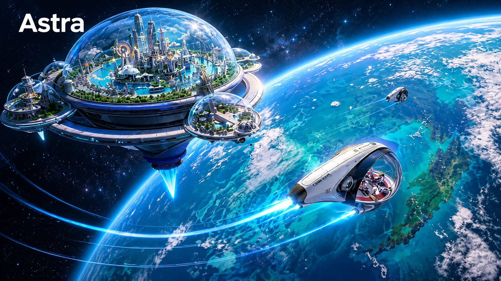
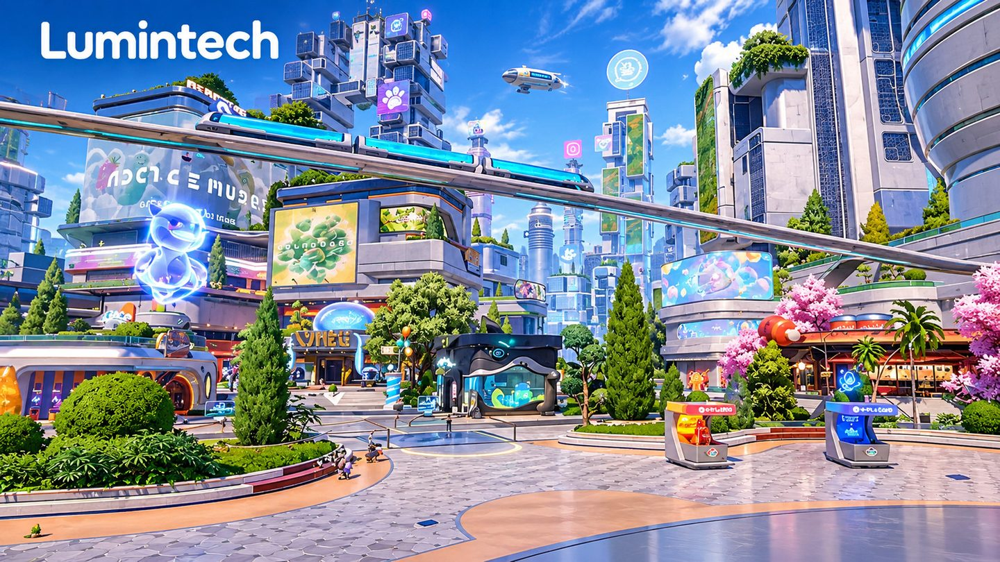
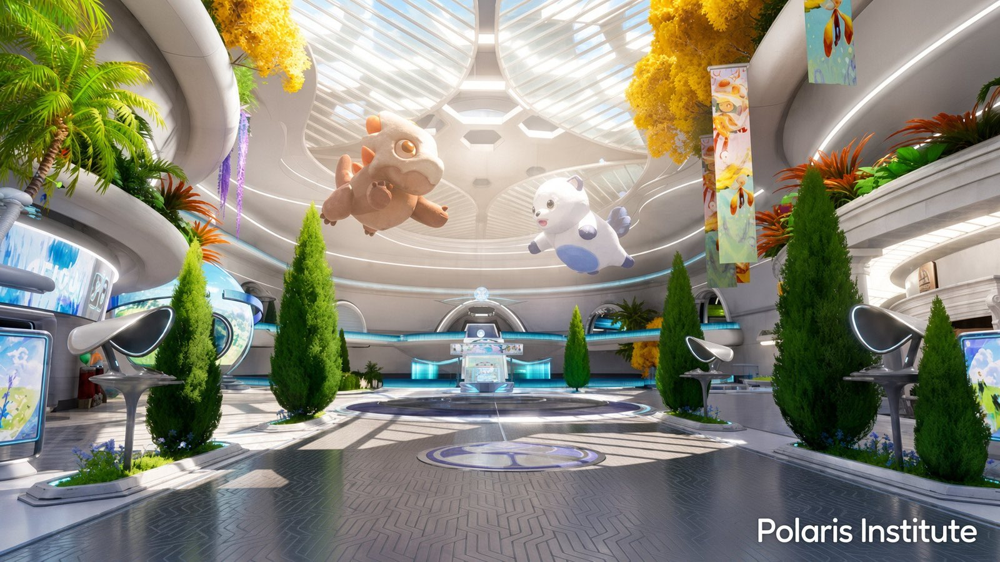
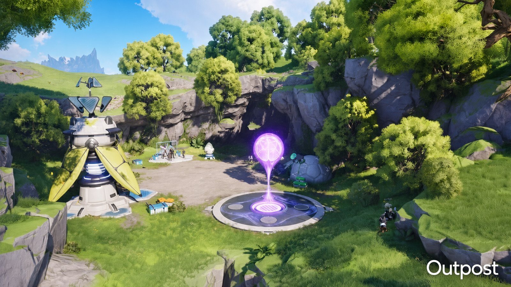

Alziamo lo sguardo. Sopra Idyll, sospesa tra le nuvole, c'è Astra: una città nata da un antico rifugio costruito per la fine del mondo, che portava con sé i semi della civiltà terrestre e che, dopo un lungo viaggio, scoprì il continente sottostante. Gli umani edificarono la città in volo sopra di esso e cominciarono a esplorarlo, e su Idyll trovarono cristalli di energia e rovine di una civiltà antica. Da quelle scoperte è nata la Lumintech, una tecnologia pulita ed efficiente alimentata dai Cristalli, che ha risolto i problemi energetici della città. Ma il cambiamento più visibile, nei quartieri nuovi, riguarda gli Aniimo: aiutano gli astreani a esplorare Idyll, i giovani sognano un compagno tutto loro e molte creature si sono trasferite in città insieme ai loro tutori, tanto che strutture e prodotti pensati per loro sono ormai dappertutto.

Il cuore di questa vita nuova è l'Istituto Polaris. Lo fondò Oswen, un erudito ed esploratore, per studiare gli Aniimo e organizzare le spedizioni su Idyll, e lì studenti e creature si allenano e crescono insieme. L'Istituto ha tre anime. L'Aniimologia documenta gli ecosistemi, analizza i profili biologici, costruisce l'Aniilog, divulga la conoscenza e sviluppa strutture per una convivenza armoniosa tra umani e Aniimo. Il Pathfinding parte verso i territori inesplorati e le rovine antiche, per svelare i segreti di Idyll. La Battle Art, infine, prepara ai pericoli della natura e, con simulazioni olografiche (Holo), affina la coordinazione in battaglia tra umano e Aniimo.


A chi parte in spedizione l'Istituto affida tre strumenti. L'Avamposto è la base su Idyll: offre valutazioni di livello, rapporti della Research Console, riposo e cure, rifornimenti e teletrasporto. L'Aniipod serve a catturare, equipaggiare e allenare gli Aniimo, e al suo interno una piegatura dello spazio crea un comodo luogo di riposo. L'Omniguanto è un dispositivo Lumintech multifunzione, che integra applicazioni diverse e permette, tra l'altro, di potenziare il twining (intreccio), lanciare abilità e trasmettere energia. Da qui comincia anche la storia che vive il giocatore (Capitolo 9): si entra nella squadra di spedizione come osservatore speciale e poi nell'Istituto. Ma tutta questa tecnologia ruota attorno a una sola cosa, il continente che vive sotto Astra, ed è da lì che dobbiamo partire.
